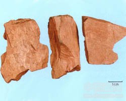

禹余粮

拼音
Yǔ Yú Liánɡ
别名
太一余粮、石脑（《本经》），禹哀，太一禹余粮（《吴普本草》），白余粮（陶弘景），禹粮石（《中药志》）。
来源
本品为氢氧化物类矿物褐铁矿，主含碱式氧化铁[FeO（OH）]。采挖后，除去杂石。
生境分布
分布很广。产河南、江苏、浙江、四川等地。
药材特点
非晶质。常成葡萄状、肾状、乳房状、块状、土状等集合体。颜色为褐色到黑色，若为土状则为黄褐色或黄色。条痕为黄褐色。半金属光泽或土状光泽，有时作丝绢光泽。不透明。断面为介壳状或土状。硬度1～5.5。比重3.6～4.0。 主要由含铁矿物经氧化分解后，再经水解汇集沉积而成。
性状
本品为块状集合体，呈不规则的斜方块状，长5～10cm，厚1～3cm。表面红棕色、灰棕色或浅棕色，多凹凸不平或附有黄色粉末。断面多显深棕色与淡棕色或浅黄色相间的层纹，各层硬度不同，质松部分指甲可划动。体重，质硬。无臭，无味，嚼之无砂粒感。
性味
甘、涩，微寒。
功能主治
涩肠止泻，收敛止血。用于久泻，久痢，崩漏，白带。
用法用量
9～15g，煎汤或入丸散。
化学成分
为沼铁矿，主要成分大约相当于Fe2O3·3H2O，但因夹杂砂石、有机物等之量不同，所含Fe2O3可从20～78％不等；又常含多量的磷酸盐。青岛市售的禹余粮，主要成分为Fe203，又含Al，Mg，K，Na，PO4等。
药理作用
1：无药理作用数据
摘录
《中国药典》